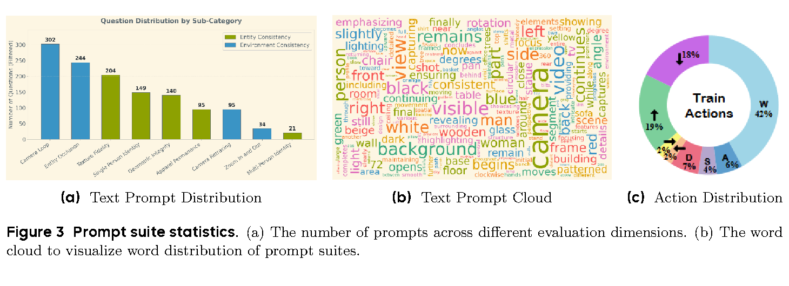

Entity Consistency
- Object geometry consistency
- Object texture consistency
- Human identity consistency
- Human appearance consistency
Project Page
THU WeChat Vision, Tencent Inc. PKU SJTU
* Equal contribution.
Video world models are expected to generate coherent environments that remember what has happened, what remains stable, and what should change after actions or events. Existing video-generation benchmarks primarily emphasize visual quality, motion smoothness, and prompt alignment, leaving long-horizon memory capability under-specified.
MBench provides a structured benchmark for memory capability in video world models. It decomposes memory into entity consistency, environment consistency, and causal consistency, with fine-grained tests for object appearance, human identity, scene layout, lighting, self-evolution, and text/action-conditioned interactions. The benchmark reports both trigger coverage and reliability after the trigger, producing an M-Score that rewards models only when they enter memory-demanding scenarios and remain consistent afterward.
We report demo leaderboard numbers across three memory axes. Replace these values with the released evaluation CSV or JSON when final model results are available.
| Rank | Model | M-Score ↑ | Entity ↑ | Environment ↑ | Causal ↑ | Trigger ↑ |
|---|
Scores are normalized to [0, 1] for readable comparison. Higher values indicate stronger memory capability.
MBench organizes long-horizon memory into three complementary dimensions and twelve sub-dimensions.
Switch between MBench memory axes and fine-grained sub-dimensions to inspect sequence-level evidence together with trigger and metric details.
Entity Consistency
Check whether object structure remains stable after the target leaves and re-enters the field of view.

MBench uses trigger-conditioned scoring to avoid giving high consistency scores to static or conservative generations that never enter the intended memory-demanding situation.
Collect clips with occlusion, camera motion, state changes, and interaction events.
Create text prompts and action sequences that require long-horizon memory.
Check whether the generated video actually reaches the memory-triggering case.
Evaluate consistency only after the trigger and combine it with coverage.
The benchmark is designed for long videos and explicit memory triggers. This section can host released prompt suites, action-conditioned scenarios, license notes, and submission instructions.
Keep private assets behind a request form if the dataset is not public yet, then replace the links below when the final release is ready.

Quick Start
git clone https://github.com/study-overflow/MBench.git
cd MBench
pip install -r requirements.txt
python evaluate.py \
--pred_dir outputs/demo_model \
--split demoIf you find MBench useful for your research, please consider citing our paper.
@article{zhang2026mbench,
title = {MBench: A Comprehensive Benchmark on Memory Capability for Video World Models},
author = {Zhang, Shengjun and Zhang, Zhang and Huang, Simin and Tang, Zhenyu and others},
journal = {arXiv preprint},
year = {2026}
}